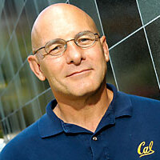

David Patterson | |
|---|---|
 | |
| Born | David Andrew Patterson November 16, 1947 Evergreen Park, Illinois, U.S. |
| Education | University of California, Los Angeles (BA, MS, PhD) |
| Known for | Reduced instruction set computer RAID Network of Workstations |
| Spouse | Linda Patterson (1967) |
| Awards | |
| Scientific career | |
| Fields | Computer systems[4] |
| Institutions | University of California, Berkeley |
| Thesis | Verification of Microprograms (1976) |
| David F. Martin Gerald Estrin | |
Doctoral students | |
| Website | www2 |
.jpg){kind=link}
David Andrew Patterson (born November 16, 1947) is an American computer scientist and academic who has held the position of professor of computer science at the University of California, Berkeley since 1976. He is a computer pioneer. He announced retirement in 2016 after serving nearly forty years, becoming a distinguished software engineer at Google.[5][6] He currently is vice chair of the board of directors of the RISC-V Foundation,[7] and the Pardee Professor of Computer Science, Emeritus at UC Berkeley.[8]
Patterson is noted for his pioneering contributions to reduced instruction set computer (RISC) design, having coined the term RISC, and by leading the Berkeley RISC project.[9] As of 2018, 99% of all new chips use a RISC architecture.[10][11] He is also noted for leading the research on redundant arrays of inexpensive disks (RAID) storage, with Randy Katz.[12]
His books on computer architecture, co-authored with John L. Hennessy, are widely used in computer science education. Hennessy and Patterson won the 2017 Turing Award for their work in developing RISC.
Early life and education
David Patterson grew up in Evergreen Park, Illinois. He graduated from South High School in Torrance, California. He then attended the University of California, Los Angeles (UCLA), receiving his Bachelor of Arts degree in Mathematics in 1969. He continued on to obtain his Master of Science degree in 1970 and PhD in 1976, both in Computer Science at UCLA. Patterson's PhD was advised by David F. Martin and Gerald Estrin.[13][14][15][16]
Research and career
Patterson is an important advocate and developer of the concept of reduced instruction set computing and coined the term "RISC".[9] He led the Berkeley RISC project from 1980, with Carlo H. Sequin, where the technique of register windows was introduced. He is also one of the innovators of the redundant arrays of independent disks (RAID) together with Randy Katz and Garth Gibson.[12][17] Patterson also led the Network of Workstations (NOW) project at Berkeley, an early effort in the area of computer clustering.[18] In 2025, Patterson became chairman of the board at Laude Institute, steering the organization with Jeff Dean, Joelle Pineau, and Andy Konwinski.[19]
Past positions
Past chair of the Computer Science Division at U.C. Berkeley and the Computing Research Association, he served on the Information Technology Advisory Committee for the U.S. President (PITAC) during 2003–05 and was elected president of the Association for Computing Machinery (ACM) for 2004–06.[20]
Notable PhD students
He has advised several notable Ph.D. students,[13][21] including:
- David Ditzel, founder and former president of Transmeta
- Garth A. Gibson, co-inventor of redundant array of inexpensive disks (RAID), founder and CTO of Panasas, professor at Carnegie Mellon University, and first president and chief executive officer of the Vector Institute
- Christos Kozyrakis, professor at Stanford University
- David Ungar, designer of the Self programming language, and currently researcher at IBM Research
- Remzi Arpaci-Dusseau, Founding Dean of the College of Computing & Artificial Intelligence, UW-Madison.
Selected publications
Patterson co-authored seven books, including two with John L. Hennessy on computer architecture: Computer Architecture: A Quantitative Approach (7 editions—latest is ISBN 9780443154065) and Computer Organization and Design RISC-V Edition: the Hardware/Software Interface (6 editions—latest is ISBN 9780128203316). They have been widely used as textbooks for graduate and undergraduate courses since 1990.[22] His most recent book is with Andrew Waterman on the open architecture RISC-V: The RISC-V Reader: An Open Architecture Atlas (1st Edition) (ISBN 978-0999249109).
His articles include:
- Patterson, David; Ditzel, David (1980). "The Case for the Reduced Instruction Set Computer" (PDF). ACM SIGARCH Computer Architecture News. 8 (6): 5–33. doi:10.1145/641914.641917. S2CID 12034303. Retrieved 3 August 2017.
- Patterson, David; Gibson, Garth; Katz, Randy (June 1988). "A case for redundant arrays of inexpensive disks (RAID)" (PDF). ACM SIGMOD Record. 17 (3): 109–116. CiteSeerX 10.1.1.68.7408. doi:10.1145/971701.50214. Retrieved 3 August 2017.
{{cite journal}}: Cite uses deprecated parameter|citeseerx=(help) - Stonebraker, Michael; Katz, Randy; Patterson, David; Ousterhout, John (1988). "The Design of XPRS" (PDF). VLDB: 318–330. Retrieved 25 March 2015.
- Anderson, Thomas; Culler, David; Patterson, David (February 1995). "A Case for NOW (Networks of Workstations)". IEEE Micro. 15 (1): 54–64. doi:10.1109/40.342018. S2CID 6225201.
Awards and honors
Patterson's work has been recognized by about 50 awards for research, teaching, and service, including Fellow of the Association for Computing Machinery (ACM)[23] and the Institute of Electrical and Electronics Engineers (IEEE), and by election to the National Academy of Engineering, National Academy of Sciences, and the Silicon Valley Engineering Hall of Fame. In 2005, he and Hennessy shared Japan's Computer & Communication award and, in 2006, he was elected to the American Academy of Arts and Sciences and the National Academy of Sciences and received the Distinguished Service Award from the Computing Research Association. [20] In 2007 he was named a Fellow of the Computer History Museum "for fundamental contributions to engineering education, advances in computer architecture, and the integration of leading-edge research with education."[24] That same year, he was also named a Fellow of the American Association for the Advancement of Science. In 2008, he won the ACM Distinguished Service Award, the ACM-IEEE Eckert-Mauchly Award, and was recognized by the School of Engineering at UCLA for Alumni Achievement in Academia. Since then he has won the ACM-SIGARCH Distinguished Service Award, ACM-SIGOPS Hall of Fame Award, and the 2012 Jean-Claude Laprie Award in Dependable Computing from IFIP Working Group 10.4 on Dependable Computing and Fault Tolerance. In 2016 he was given the Richard A. Tapia Achievement Award for Scientific Scholarship, Civic Science and Diversifying Computing.[25] For 2020 he was awarded the BBVA Foundation Frontiers of Knowledge Award in Information and Communication Technologies.[26]
Patterson was on the 1966 El Camino College wrestling team that won the state championship. In 2018 the team was inducted into the El Camino Hall of Fame. [27]
At the 2013 California Raw Championships, he set the American Powerlifting Record for the state of California for his weight class and age group in bench press, dead lift, squat, and all three combined lifts.[28]
On February 12, 2015, IEEE installed a plaque at UC Berkeley to commemorate the contribution of RISC-I[29] in Soda Hall at UC Berkeley. The plaque reads:
- IEEE Milestone in Electrical and Computer Engineering
- First RISC (Reduced Instruction Set Computing) Microprocessor
- UC Berkeley students designed and built the first VLSI reduced instruction-set computer in 1981. The simplified instructions of RISC-I reduced the hardware for instruction decode and control, which enabled a flat 32-bit address space, a large set of registers, and pipelined execution. A good match to C programs and the Unix operating system, RISC-I influenced instruction sets widely used today, including those for game consoles, smartphones and tablets.
On March 21, 2018, he was awarded the 2017 ACM A.M. Turing Award together with John L. Hennessy for developing RISC.[10] The award attributed them for pioneering "a systematic, quantitative approach to the design and evaluation of computer architectures with enduring impact on the microprocessor industry".[11]
In 2022 he was awarded the Charles Stark Draper Prize by the National Academy of Engineering alongside John L. Hennessy, Steve Furber and Sophie Wilson for contributions to the invention, development, and implementation of reduced instruction set computer (RISC) chips.[30][31]
Charitable work
From 2003 to 2012 he rode in the annual Waves to Wine MS charity event as part of Bike MS; a 2-day cycling adventure. He was the top fundraiser in 2006, 2007, 2008, 2009, 2010, 2011, and 2012.[32]
References
- ^ "Charles P. "Chuck" Thacker is the recipient of the 2017 Eckert-Mauchly Award". awards.acm.org.
- ^ "David A. Patterson, Google, Inc". nasonline.org.
- ^ Karl Karlstrom Outstanding Educator Award (1991)
- ^ David Patterson publications indexed by Google Scholar
- ^ "People of ACM - David Patterson". acm.org.
- ^ "Dave Patterson – Google Research".
- ^ "Board of Directors". riscv.org. RISC-V Foundation. Archived from the original on 2017-08-03. Retrieved 2017-08-03.
- ^ Who's Who in America 2008. Marquis Who's Who. New Providence, New Jersey. 2007. ISBN 978-0-8379-7010-3.
{{cite book}}: CS1 maint: location missing publisher (link) - ^ a b Reilly, Edwin D. (2003). Milestones in computer science and information technology. Greenwood Publishing. p. 50. ISBN 1-57356-521-0.
- ^ a b "Computer Chip Visionaries Win Turing Award". The New York Times. 2018-03-21.
- ^ a b "John Hennessy and David Patterson will receive the 2017 ACM A.M. Turing Award". acm.org. Retrieved 2018-03-21.
- ^ a b "David Patterson: Biography". Computer History Museum. 2007.
- ^ a b David Patterson at the Mathematics Genealogy Project
- ^ "David Patterson - A.M. Turing Award Laureate". acm.org.
- ^ Patterson, David Andrew (1976). Verification of Microprograms. acm.org (PhD thesis). UCLA. OCLC 897786365. ProQuest 302812848.
- ^ Patterson, D. A., "Verification of Microprograms," Technical Report No. UCLA-ENG-7707, UCLA Computer Science Department, January 1977.
- ^ Linda Null; Julia Lobur (14 February 2014). The Essentials of Computer Organization and Architecture. Jones & Bartlett Learning. p. 512. ISBN 978-1-284-15077-3.
- ^ Hennessy, John L.; Patterson, David A. (3 November 2006). Computer Architecture: A Quantitative Approach. Elsevier. p. xxiii. ISBN 978-0-08-047502-8.
- ^ Sullivan, Mark (23 June 2025). "This Perplexity cofounder wants to help AI breakthroughs graduate from university labs". Fast Company. Fast Company. Retrieved 30 September 2025.
- ^ a b "CRA Service Awards 2006". archive.cra.org.
- ^ "David Patterson's PhD Students".
- ^ "John Hennessy and David Patterson win the Frontiers of Knowledge Award in ICT". EurekAlert!. Retrieved 2024-02-15.
- ^ "Recipients". Archived from the original on 2016-12-01. Retrieved 2015-06-10.
- ^ "Computer History Museum | Fellow Awards - David Patterson". Archived from the original on 2013-02-06. Retrieved 2013-02-16.
- ^ "Richard A. Tapia Achievement Award - Tapia Conference". tapiaconference.org. 11 November 2022.
- ^ BBVA Foundation Frontiers of Knowledge Awards 2020
- ^ [1]
- ^ "Open Powerlifting Record for David Patterson".
- ^ "IEEE SCV Silicon Valley Technology History Committee". IEEE.
- ^ "Recipients of the Charles Stark Draper Prize for Engineering". nae.edu.
- ^ "Charles Stark Draper Prize for Engineering". nae.edu.
- ^ "Berkeley's Anti-MS Crew". anti-ms-crew.berkeley.edu.